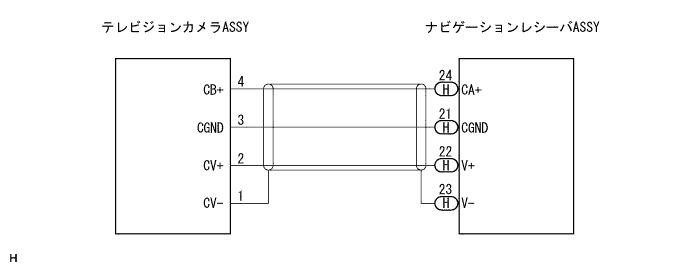
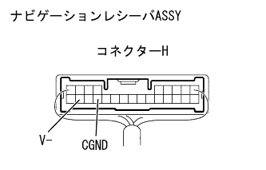
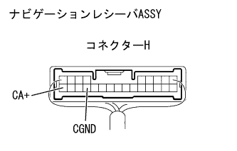
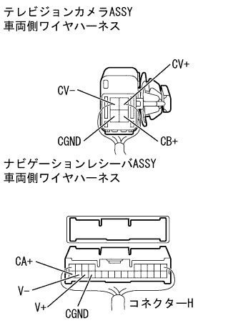
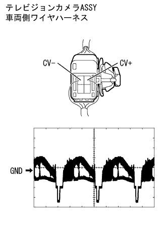

Back Guide Monitor System Back Guide Monitor Image is Abnormal (Color, Image Distortion) |

)))| Step 1 | Inspect Navigation Receiver Assembly (CB+, CGND, V-) |
 |
Resistance Inspection
Using SST (Toyota electrical tester), with connector H of the vehicle side wire harness connected, measure the resistance between each terminal and body ground from the back side of connector H.
| Tester Connection (Terminal Symbol) | Condition | Standard |
|---|---|---|
| H21 (CGND) - Body ground | Always | Below 1 Ω |
| H23 (V-) - Body ground | Always | Below 1 Ω |
 |
Voltage Inspection
Using SST (Toyota electrical tester), with connector H of the vehicle side wire harness connected, measure the voltage between each terminal from the back side of connector H.
| Tester Connection (Terminal Symbol) | Condition | Standard |
|---|---|---|
| H24(CA+) - H21(CGND) | IG ON Shift lever in R position | 5.7 to 6.5 V |
|
| ||||
| OK | |
| Step 2 | Inspect Wire Harness and Connector (Television Camera Assembly - Navigation Receiver Assembly) |
Pre-inspection Preparation
Disconnect the television camera assembly and connector H of the navigation receiver assembly.
 |
Using SST (Toyota electrical tester), with the connectors disconnected, measure the resistance of the vehicle side wire harness between the television camera assembly and navigation receiver assembly.
| Tester Connection (Terminal Symbol) | Condition | Standard |
|---|---|---|
| H22 (V+) - Body ground | Always | 10 kΩ or higher |
| H23 (V-) - Body ground | Always | 10 kΩ or higher |
| H21 (CGND) - Body ground | Always | 10 kΩ or higher |
| H24 (CA+) - Body ground | Always | 10 kΩ or higher |
| 2(CV+) - H22(V+) | Always | Below 1 Ω |
| 1(CV-) - H23(V-) | Always | Below 1 Ω |
| 3(CGND) - H21(CGND) | Always | Below 1 Ω |
| 4(CB+) - H24(CA+) | Always | Below 1 Ω |
|
| ||||
| OK | |
| Step 3 | Inspect Television Camera Assembly (CV+, CGND, CV-) |
Disconnect navigation receiver assembly connector H.
 |
Resistance Inspection
Using SST (Toyota electrical tester), with the television camera assembly connector connected, measure the resistance between each terminal from the back side of the vehicle side wire harness connector.
| Tester Connection (Terminal Symbol) | Condition | Standard |
|---|---|---|
| 1(CV-) - 3(CGND) | Always | Below 1 Ω |
Connect connector H of the navigation receiver assembly.
 |
Waveform Inspection
Using SST (TaSCAN), with the television camera assembly connector connected, check the waveform from the back side of the vehicle side wire harness connector.
| Item | Description |
|---|---|
| Measurement Terminal | 2(CV+) - 1(CV-) |
| Tool Setting | 0.2V/DIV, 0.2μS/DIV |
| Measurement Condition | IG ON, shift lever in R |
|
| ||||
| OK | ||
| ||